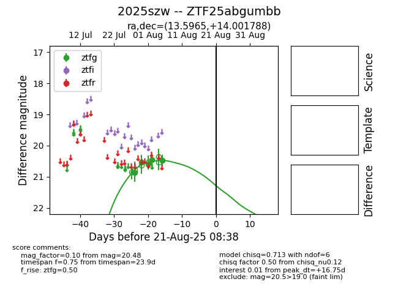

Target 2025szw at 2025-08-21 09:29, see:
FINK: fink-portal.org/ZTF25abgumbb
Lasair: lasair-ztf.lsst.ac.uk/objects/ZTF25abgumbb
ALeRCE: alerce.online/object/ZTF25abgumbb
TNS: wis-tns.org/object/2025szw
YSE: ziggy.ucolick.org/yse/transient_detail/2025szw
alt names
ZTF25abgumbb (ztf,alerce)
2025szw (tns,yse)
coordinates:
equatorial (ra, dec) = (13.5965,+14.00179)
galactic (l, b) = (124.0190,-48.86374)
photometry
last ztfg=20.48
5 ztfg detections
